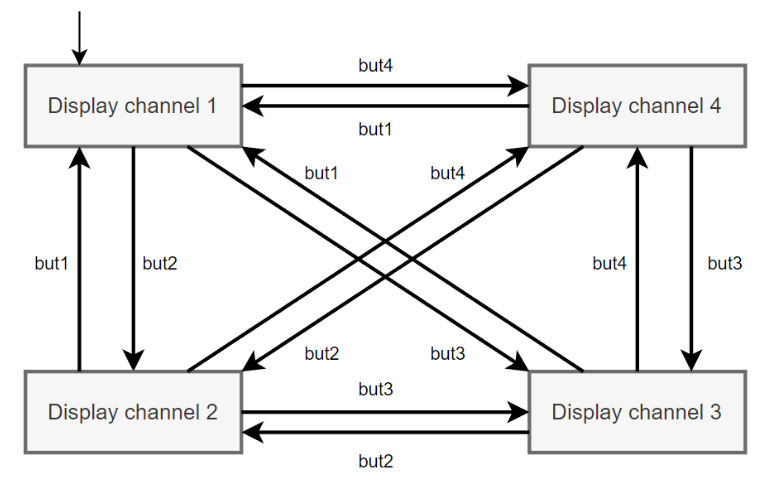
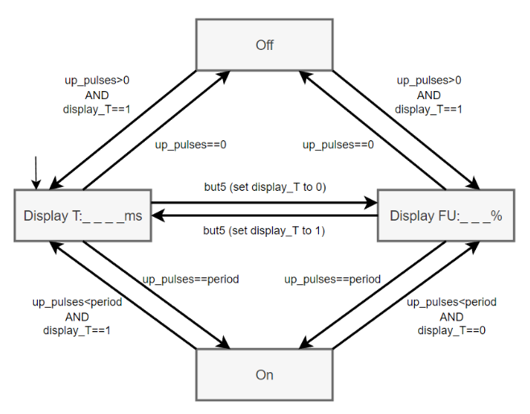
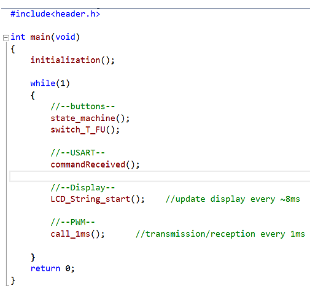

1.Requirements:
• The system shall have 4 different channel who can be analyzed.
• The system shall allow changing the displayed characteristics using a push button.
• If the signal is continuously on then the system should display „On”.
• If the signal is continuously off then the system should display „Off”.
• The system shall work correctly for T>=10ms.
• The system shall work correctly for T<=5000ms.
• The system shall update LCD every less than 10ms.
• The system shall generate a PWM signal.
• The system shall allow users to modify the FU value of PWM using serial communication.
• The system shall allow users to modify the T value of PWM using serial communication.
• The system shall allow users to enable generating PWM signal.
• The system shall allow users to disable generating PWM signal.
2.Architecture:
State machine select channel:
State machine display channel:
USART guide:
Four types of instructions have effects in the environment of the project:
• enable generation pwm: transmit “on”;
• disable generation pwm: transmit “off”;
• change number of up pulses: transmit “F” and then the number, ex: “F30”, “T35”;
• change value of period: transmit “T” and then the number, ex: “T200”, “T300”.
Internal processes:
• If F transmitted < 0 then F=0;
• If F transmitted > T then F=T;
• If T transmitted <10 then T=10;
• If T transmitted > 5000 then T=5000.
Serial communication must have below settings:
3.Implementation:
Loop:
1. Evaluate the state of the buttons.
2. If any button is pressed change the channel/view according to architecture diagrams.
3. Check if any new USART command is received and respects the specification from via USART.
4, If the command is spelled correctly, modify the variables accordingly.
5. Update the display with the current information: channel, view, measured value.
6. Generate the PWM signal with the parameters specified by user.
7. Analyze the PWM from the specified pin(using buttons).
4.Testing:
Testing state machines:
Testing USART messages and display measurements: